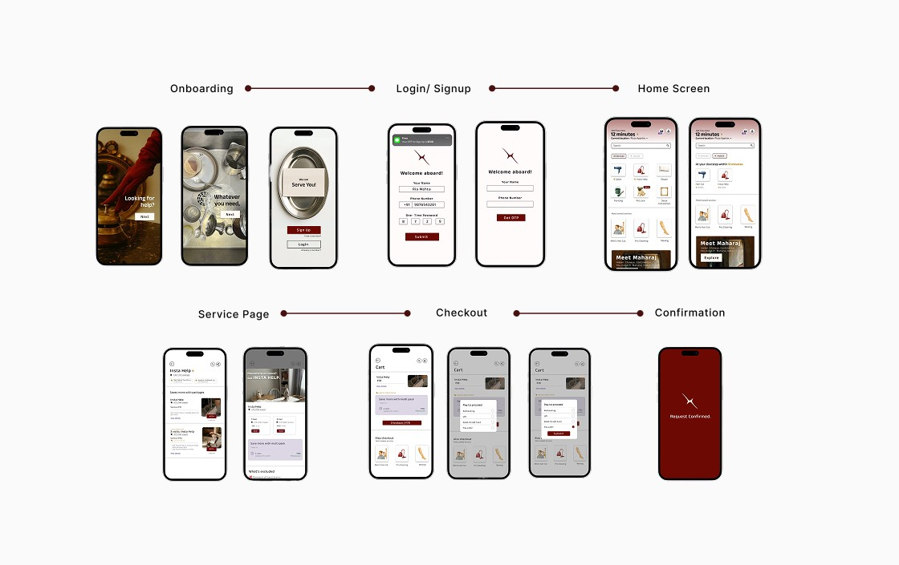

Fixsy
By combining clarity with contemporary design thinking, the project delivers a considered visual identity with strong and consistent brand alignment.

Comprehensive Service Providing Platform
Fixsy reimagines how everyday tasks get done from fixing a leak to booking a last-minute salon service. Instead of dealing with unreliable contacts or long booking processes, users get a fast, intuitive experience that connects them with trusted professionals in minutes.
Every interaction is designed to feel clear, smooth, and reassuring, turning daily hassles into something simple, reliable, and surprisingly effortless to manage.
Managing everyday services like cleaning, repairs, or even a quick salon visit often turns into a hassle in busy urban life. People juggle between unreliable contacts, multiple apps, or last-minute arrangements that rarely go as planned. Fixsy was imagined as a simple, all-in-one solution that brings essential services right to your doorstep. The idea was to remove friction from the process and create a smooth, trustworthy experience where users can book help as easily as ordering food.
What I Did in This Project
Finding the right person for everyday services is surprisingly stressful. Users often deal with uncertainty: Is the person reliable? Will they show up on time? Is the pricing fair? Existing platforms either feel cluttered or lack transparency, making the whole process frustrating and time-consuming.
This creates hesitation and breaks trust. There’s a clear gap for a platform that feels dependable, quick, and effortless, where users feel confident from the moment they book to the moment the service is completed.
Booking Help in Under Two Minutes
The focus is on helping users place a request in under two minutes with a clean and intuitive interface. It also prioritizes building trust by showcasing verified professionals and clear service details. Beyond just booking, the goal is to create a reliable end-to-end experience where users feel in control, informed, and satisfied throughout the entire journey, from selecting a service to its completion.
Process & Interaction Principles
1. Designing for "Zero Hesitation" Moments
Focused on micro-decisions: Service selection, time slots, and confirmations, reducing cognitive load so users never pause or second-guess while booking.
2. Progressive Disclosure of Information
Revealed details (pricing, provider info, slots) only when needed to avoid clutter while still building confidence step-by-step.
3. Designing for First-Time Users
Focused on clarity over flexibility making the experience feel guided and obvious even for someone using such a service for the first time.


Major Learnings
- ✦ Trust is built at micro-moments of transparent pricing and identity.
- ✦ Minimizing steps during emergencies (like plumbing leaks) is critical.
- ✦ Clear confirmation screens give customers emotional relief.